14 Introducció a les GUI
En aquest apartat aprendrem a crear interfícies gràfiques d'usuari (GUI) molt senzilles amb la llibreria guizero. El que farem és crear una interfície Frankenstein amb molts ginys, com la mostrada a continuació, per a familiaritzar-nos amb l'ús de guizero. Una vegada presentats els ginys, ja podreu fer les vostres pròpies GUIs.
Exemple:
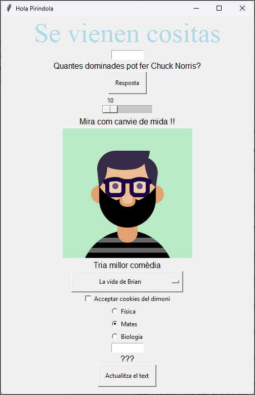
14.1 Primers passos
- Instal·la
tkinteramb el gestor de paquets de la teva distribució. Per a Ubuntu/Debian:
sudo apt install python3-tk
-
Activa un entorn virtual de Python. Revisa l'apartat Creació d'un virtual environment si no recordes com es fa.
-
Una vegada treballant en l'entorn virtual, instal·la la llibreria
guizeroescrivint al terminal de VSC:
pip install guizero
- Crea un nou arxiu, afegix este codi i executa'l. Et permetrà comprovar que tot està ben configurat.
from guizero import App
app = App(title="Hola Pirindola")
app.display()
- Hauries de vorer una finestra de GUI com esta (titulada «Hola Pirindola» i buida). L'aspecte de la finestra serà diferent segons el SO.
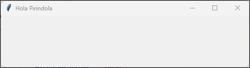
14.2 Afegir ginys
Pots afegir text, quadres de text, botons i altres elements a una GUI. Estos elements s'anomenen ginys (widgets). Cada vegada que afegisques un giny, segueix estes dos regles:
Regla 1
Afegix el giny a la llista d'imports de l'inici del programa. Cada tipus de giny només s'ha d'afegir una vegada a la llista, i després el pots utilitzar tantes vegades com vulgues en la GUI.
El següent codi importa dos ginys: App i Text.
from guizero import App, Text
Regla 2
Afegix tot el codi dels ginys entre la línia de codi que crea l'App i la línia de codi que la mostra app.display().
from guizero import App
app = App(title="Hola Pirindola")
#
# Tot el codi dels ginys ací
#
app.display()
14.3 Ginys bàsics
Text
El giny Text mostra text en pantalla.
Afegix Text a la llista de ginys a l'inici del programa i crea un giny Text.
from guizero import App, Text
app = App(title="Hola Pirindola")
benvinguda = Text(app, text="Se vienen cositas")
app.display()
Executa el codi. Hauries de veure el text en la GUI («Se vienen cositas»).
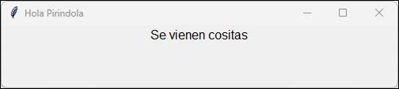
Pots canviar la mida, el tipus de lletra i el color del text així:
from guizero import App, Text
app = App(title="Hola Pirindola")
benvinguda = Text(
app,
text="Se vienen cositas",
size=40,
font="Times New Roman",
color="lightblue"
)
app.display()
Separar les propietats dels objectes Text() en diferents línies ajuda a llegir i entrendre el codi.
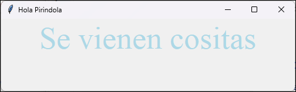
TextBox
El giny TextBox permet a l'usuari escriure dades.
Afegix TextBox a la llista de ginys a l'inici del programa i crea un giny TextBox al final del codi.
from guizero import App, Text, TextBox
app = App(title="Hola Pirindola")
benvinguda = Text(
app,
text="Se vienen cositas",
size=40,
font="Times New Roman",
color="lightblue"
)
nom = TextBox(app)
app.display()
Executa el codi. Hauries de vorer un quadre de text xicotet baix del text principal.
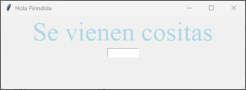
PushButton
El giny PushButton crea un botó que es pot apretar. Quan s'apreta el botó, es crida una funció indicada en la propietat command.
Este exemple mostrarà un acudit, amb un botó per a apretar que mostrarà la resposta.
Afegix PushButton a la llista de ginys a l'inici del programa i escriu una funció anomenada mostra_missatge() a continuació:
from guizero import App, Text, TextBox, PushButton
def mostra_missatge():
missatge.value = "Totes"
Configurarem que aquesta funció siga "cridada" a l'apretar el botó i ens servirà per a canviar el contingut d'un giny de Text referenciat per la variable missatge.
Afegix un giny Text amb el començament de l'acudit i guarda la seua referència a la variable missatge.
missatge = Text(app, text="Quantes dominades pot fer Chuck Norris?")
Crea un giny PushButton i programa'l per a que cride a la funció mostra_missatge quan s'aprete el botó. Entre els diferents paràmetres que tenen els ginys de PushButton, tenim:
command: que indica la funció a cridar quan s'apreta el botótext: és el text que apareix al botó
Per tant, el nostre botó podria quedar codificat de la següent forma:
actualitza_text = PushButton(
app,
command = mostra_missatge,
text = "Resposta"
)
A l'apretar el botó s'executa el mètode mostra_missatge, que canvia el valor (.value) referenciat per la variable missatge a "Totes".
A l'executar el codi hauries de veure la pregunta ...
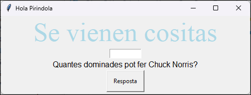
... i quan apretes el botó, es mostrarà la resposta.
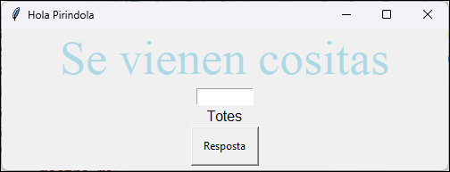
Slider
Un control lliscant Slider permet als usuaris triar fàcilment un valor d'un interval. Funciona de manera similar al control de volum.
Este exemple et permetrà canviar la mida de la lletra amb un control lliscant.
Afegix Slider a la llista de ginys a l'inici del programa (import) i crea a continuació un giny Slider.
Cada vegada que es mou el control lliscant, Slider crida a la funció que se li passe a través del paràmetre command. El que farem és programar que cride a la funció canviar_mida_text que codificarem després.
mida_text = Slider(
app,
command = canviar_mida_text,
start = 10,
end = 80
)
Els paràmetres start i end determinen els valors mínim i màxim del control lliscant (les mides de lletra en aquest exemple).
Crearem ara un giny de tipus Texta qui li canviarem la mida de la lletra mitjançant el Slider. Afegix un Text a l'App i guarda la seua referència a la variable text_de_mostra.
text_de_mostra = Text(app, text="Mira com canvie de mida !!")
Queda per escriure la funció canviar_mida_text, que rebrà com a paràmetre d'entrada el valor actual del slider valor_slider i l'utilitzarà per a aplicar-lo a la mida (.size) del giny Text referenciat per text_de_mostra.
def canviar_mida_text(valor_slider):
text_de_mostra.size = valor_slider
A l'executar el codi hauries de vorer el text d'exemple ...
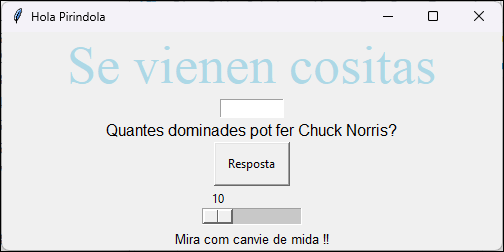
...i quan mous el control lliscant, el text es farà més gran o més xicotet.
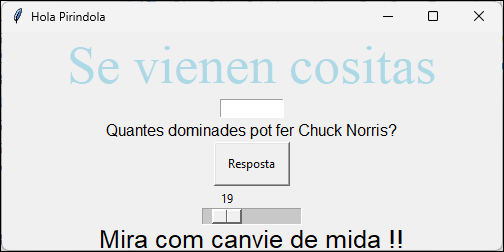
Picture
Pots afegir una imatge a una GUI amb el giny Picture. Busca una imatge i guarda-la en la mateixa carpeta que el teu fitxer de Python.
Inclou Picture a l'import del programa i afegix un giny de la següent forma.
imatge = Picture(app, image="avatar.png")
El paràmetre image inclourà el path a l'arxiu d'imatge que vulgues incloure.
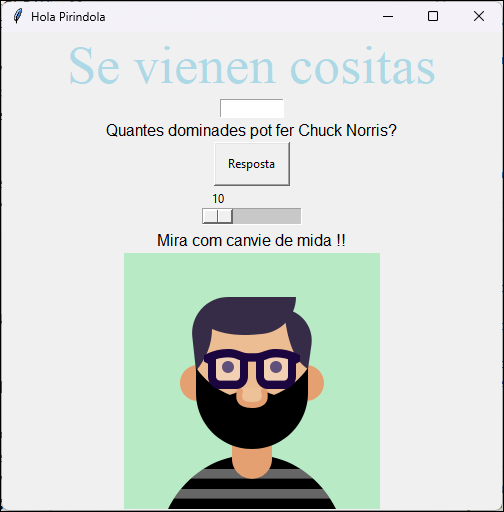
Combo
El giny Combo et permet seleccionar una opció d'un menú desplegable.
Afegirem Combo a la llista de ginys a l'inici del programa i inclourem un giny de la següent forma.
selector = Combo(app,
options = ["La vida de Brian",
"El gran Lebowski",
"Spaceballs",
"Dias de fútbol"],
)
El selector ens permet triar entre una sèrie d'opcions que es codifiquen dins una llista que es passa a través del paràmetre options.
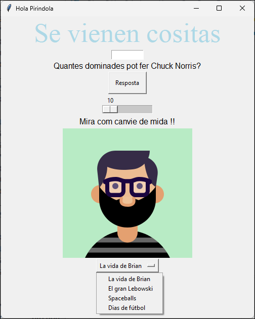
Per a vorer l'efecte de seleccionar una opció, crearem un giny de tipus Text, amb un text inicial, i que modificarem amb el valor seleccionat al Combo.
text_peli = Text(app, text="Tria la millor comèdia")
Modificarem el Combo per a incloure l'acció que caldrà fer quan es trie una opció del giny. El paràmetre comand definirà la funció que es llançarà.
selector = Combo(app,
options = ["La vida de Brian",
"El gran Lebowski",
"Spaceballs",
"Dias de fútbol"],
width = 30,
height = 2,
command = actualitza_peli
)
Cada vegada que l'usuari canvie l'opció del selector, es cridarà a actualitza_peli. La crida inclourà el valor de l'opció triada en el selector i que es podrà utilitzar dins la funció. També s'ha aprofitat per a modificar la mida del Combo, mitjançant els seus paràmetres width i height.
Queda només programar la funció actualitza_peli per a que actualitze el text de giny text_peli.
def actualitza_peli(seleccionada):
text_peli.value = seleccionada
A l'executar el programa podrem modificar el giny de text al canviar la selecció del Combo.
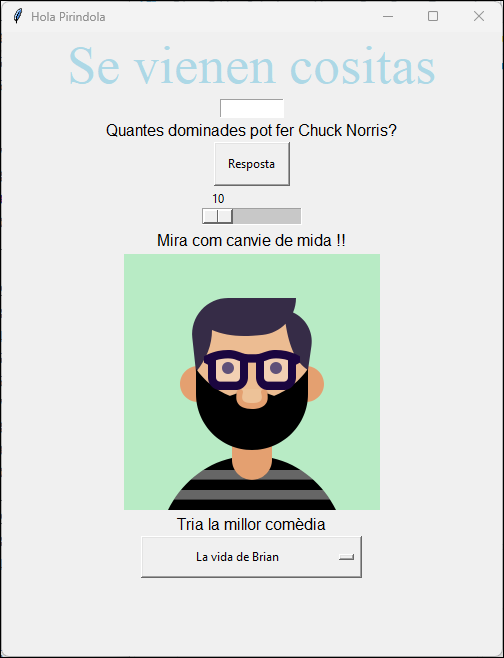
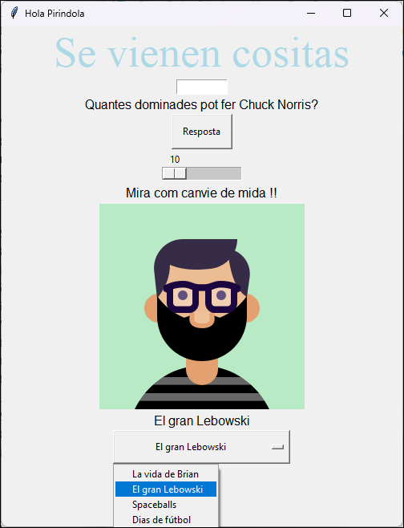
CheckBox
El giny CheckBox et permet seleccionar o desseleccionar una opció.
cookies = CheckBox(app, text="Acceptar cookies del dimoni")
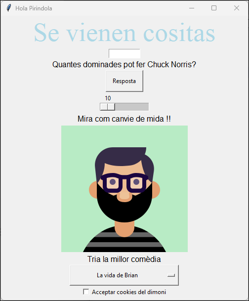
Com la majoria dels ginys vistos fins ara, aquest també es pot parametritzar mitjançant els paràmetres width, height, command ... Els IDEs en general solen mostrar ajudes dels diferents paràmetres i tipus d'aquests mentre piques el codi.
Exemple de VSC
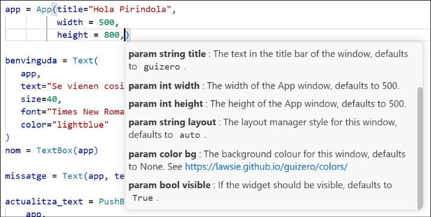
ButtonGroup
El giny ButtonGroup et permet crear un grup de botons ràdio per a triar una opció d'un conjunt. Cal afegir ButtonGroup a la llista de ginys a l'import del programa i a continuació definir el grup de la següent forma.
assignatures = ButtonGroup(
app,
options = [ ["Física", "F"], ["Mates", "M"],["Biologia", "B"] ],
selected = "M",
)
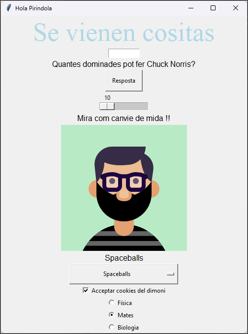
Cada botó queda definit per una llista de 2 valors [1r, 2n]: el 1r és el text que apareix al botó i el 2n és la referència que s'utilitza per a gestionar el botó (ha de ser única). El conjunt de botons quedarà definit com una matriu, formada per una llista de llistes de botons.
[ ["Física", "F"],
["Mates", "M"],
["Biologia", "B"]
]
El paràmetre selected definix quin és el botó seleccionat per defecte, mitjançant la seua referencia (M en este exemple).
14.4 Obtindre un valor
Com ja hem fet anteriorment, podem obtindre el valor de qualsevol giny accedint al seu atribut .value.
En aquest exemple agafarem el text escrit en un TextBox per a actualitzar el valor d'un giny de tipus Text a l'apretar un PushButton.
Afegix els ginys, posant de moment ??? com a text al giny.
entrada = TextBox(app)
eixida = Text(app, text="???")
boto = PushButton(app, text="Actualitza el text", command=nou_text)
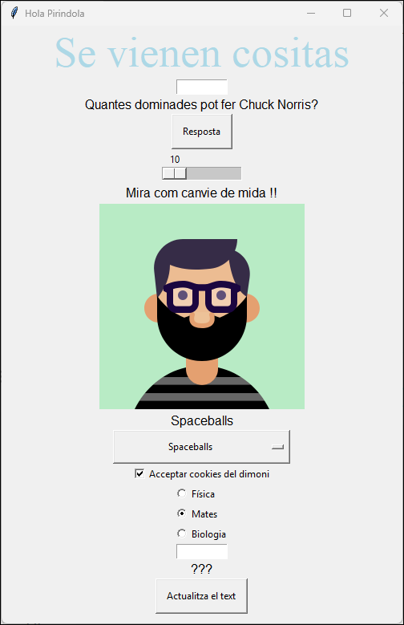
nou_text és la funció que es cridarà a l'apretar el botó. La funció agafarà el valor escrit en el quadre de text i l'escriurà en el text d'eixida.
def nou_text():
eixida.value = entrada.value
A l'apretar el botó, el text del TextBox es mostrarà al Text.
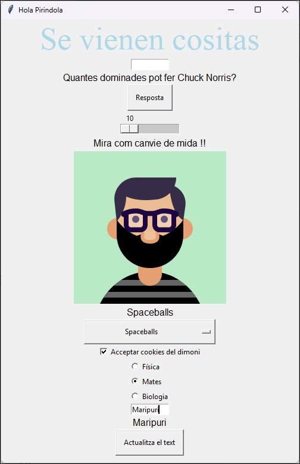
EXERCICI
- Crea la teua pròpia GUI amb alguns dels ginys que has après.
- Consulta la documentació de guizero per a descobrir com personalitzar els ginys.
- Utilitza un giny diferent que hages trobat en la documentació de guizero.